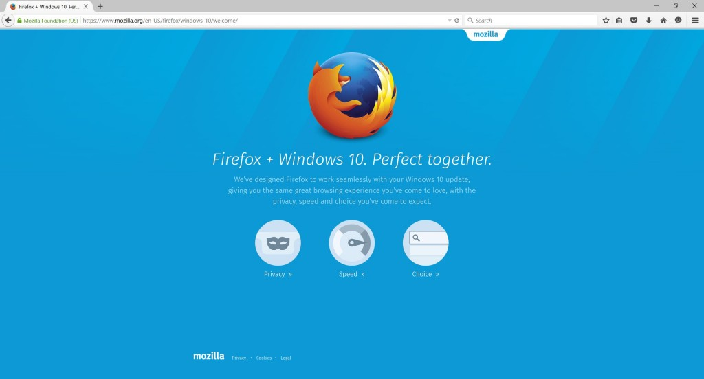

搭配嶄新外觀，並可保留使用者所設定的搜尋引擎的 Firefox for Windows 10 目前已正式上線，使用者現在就能下載或更新此一最新版本，體驗更精簡、更順暢的 Firefox 經驗。使用者也將發現更大、更醒目的設計元素，有更多空間可供上網瀏覽。

Firefox 為 Windows 10 提供嶄新面貌
Firefox 使用者現在就能下載或更新為最新版本，看看 Firefox 在 Windows 10 上的新面貌。最新版 Firefox 介面經過仔細微調，提供更精簡、更順暢的經驗。使用者也會發現更大、更醒目的設計元素，有更多空間可供上網瀏覽。
不論使用者是升級為 Windows 10，或是使用已預裝 Windows 10 的裝置，Windows 都會將預設瀏覽器設定為 Microsoft Edge。Mozilla 另提供相關支援素材，可引導使用者在 Windows 10 中選擇或恢復 Firefox 為你的預設瀏覽器。
即便你是透過 Windows 10 工作列的搜尋欄位進行搜尋，Firefox 也能協助用戶保留既有的選擇。當使用此搜尋欄位時，Windows 10 仍會啟動預設的瀏覽器，但僅會顯示 Microsoft Bing 的搜尋結果。若使用者已將 Firefox 設定為 Windows 10 的預設瀏覽器，則搜尋欄位所顯示的結果，均來自於使用者為 Firefox 所選擇的預設搜尋引擎。
Firefox 讓第三方附加元件 (Add-on) 更安全
就 Firefox 所重視的控制權與可自訂特色來說，附加元件 (Add-on) 扮演了很重要的角色。附加元件將持續為 Firefox 的外觀與功能提供無限可能，Mozilla 今日更須務實確保使用者的安全經驗。在提供給附加元件開發者的指南中，我們也公布了完整的附加元件驗證流程。
在未來的 Firefox 版本中，任何未經驗證的第三方附加元件，均將預設為停用狀態。從今天起，只要在 Firefox 中出現尚未簽章的附加元件，就會在該元件旁邊看到警告提示，但尚不會自動停用該附加元件。這類警告文字是要提醒使用者此一附加元件尚未通過 Mozilla 驗證。Mozilla 現正與附加元件開發者合作，協助這些人依照 Mozilla 的規範，為使用者開發出更安全的附加元件。